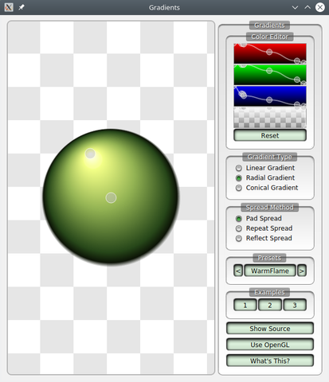

Gradients
Shows how gradients can be used with QPainter.

There are three types of gradients:
- Linear gradients interpolate colors between start and end points.
- Radial gradients interpolate colors between a focal point and the points on a circle surrounding it.
- Conical gradients interpolate colors around a center point.
The panel on the right contains a color table editor that defines the colors in the gradient. The three topmost controls determine the red, green and blue components while the last defines the alpha of the gradient. You can move points, and add new ones, by clicking with the left mouse button, and remove points by clicking with the right button.
There are three example configurations available at the bottom of the page that are provided as suggestions on how a color table could be configured.
Qt also provides a suite of named gradient presets. They are based on the free WebGradients collection. Click on the name in the Presets box to show the gradient. Use the arrow buttons to browse through the available presets.